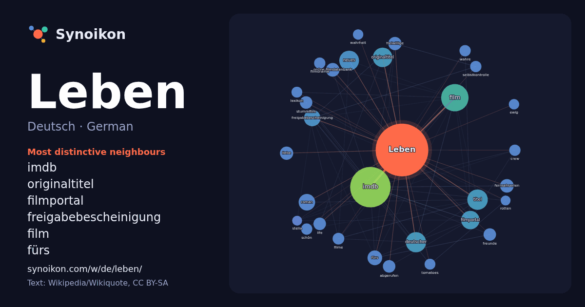

Deutsch · German · popular word
Leben
“life” · The words found around it in 1550 instances from German Wikipedia, Wikiquote.

Most distinctive neighbours
- imdb 168×
- originaltitel 36×
- filmportal 36×
- freigabebescheinigung 29×
- film 23×
- fürs 22×
- online-filmdatenbank 20×
- fernsehserien 19×
- roman 18×
- freiwillige 17×
- abgerufen 17×
- stummfilm 17×
- titel 16×
- life 15×
- neues 15×
- freunde 14×
- liebe 14×
- selbstkontrolle 14×
- deutscher 14×
- filmdrama 13×
× = how many times more often than in general German Wikipedia text.
Most frequent neighbours
- imdb 168
- film 77
- titel 43
- deutscher 42
- neues 40
- originaltitel 39
- filmportal 35
- freigabebescheinigung 28
- roman 28
- tod 23
- fürs 22
- fernsehserien 19
- online-filmdatenbank 19
- deutsche 18
- deutschen 18
- folgender 18
- freiwillige 18
- liebe 18
- lassen 17
- abgerufen 16
In context
- Evolution Leben bezeichnet in den Naturwissenschaften heute größtenteils eine Organisationsform, die durch gewisse Prozesse charakterisiert ist. Was Leben bzw Wikipedia snippets · Leben
- Leben und leben lassen steht für Zitat aus Schillers Drama Wallensteins Lager Weitere, darauf verweisende Zitate, siehe Liste geflügelter Worte/L#Leben Wikipedia snippets · Leben und leben lassen
- das Leben bei IMDb Es war einmal … das Leben in der Online-Filmdatenbank Es war einmal … das Leben bei Fernsehserien.de Es war einmal … das Leben bei Wikipedia snippets · Es war einmal … das Leben
- leben bei IMDb They live bei Rotten Tomatoes (englisch) Artikel zum Film auf John Carpenters Homepage Sie leben in der Online-Filmdatenbank Sie leben Wikipedia snippets · Sie leben
- Das Leben und Ich (Originaltitel: Boy Meets World, in Österreich Boy Meets World – Das Leben und ich) ist eine US-amerikanische Sitcom, die 158 Episoden Wikipedia snippets · Das Leben und Ich
- US-Produktion Willkommen im Leben (original My So-Called Life), auch wenn diese als Drama angelegt war. Im Gegensatz zu dieser zeigt Mein Leben & Ich jedoch starke Wikipedia snippets · Mein Leben & Ich
- Leben! (chinesisch 活着, Pinyin Huózhe) ist ein Film aus dem Jahr 1994 vom Regisseur Zhang Yimou mit Gong Li in der Hauptrolle. Leben! bietet ein Panorama Wikipedia snippets · Leben!
- Mein Leben steht für: Mein Leben (Arte), biografische Reihe auf dem Fernsehsender Arte Mein Leben (Tschechow), Erzählung von Anton Tschechow (1896) Mein Wikipedia snippets · Mein Leben
More German words
- Arbeit
- Brücke
- Essen
- Familie
- Geld
- Geschichte
- Gesundheit
- Gold
- Gott
- Kunst
- Macht
- Natur
- Tod
- Wahrheit
- Wasser
- Wissenschaft
- Zug
Precomputed on 2026-10-09 with default settings (±5 words, medium corpus). The interactive map can refresh it with live data.